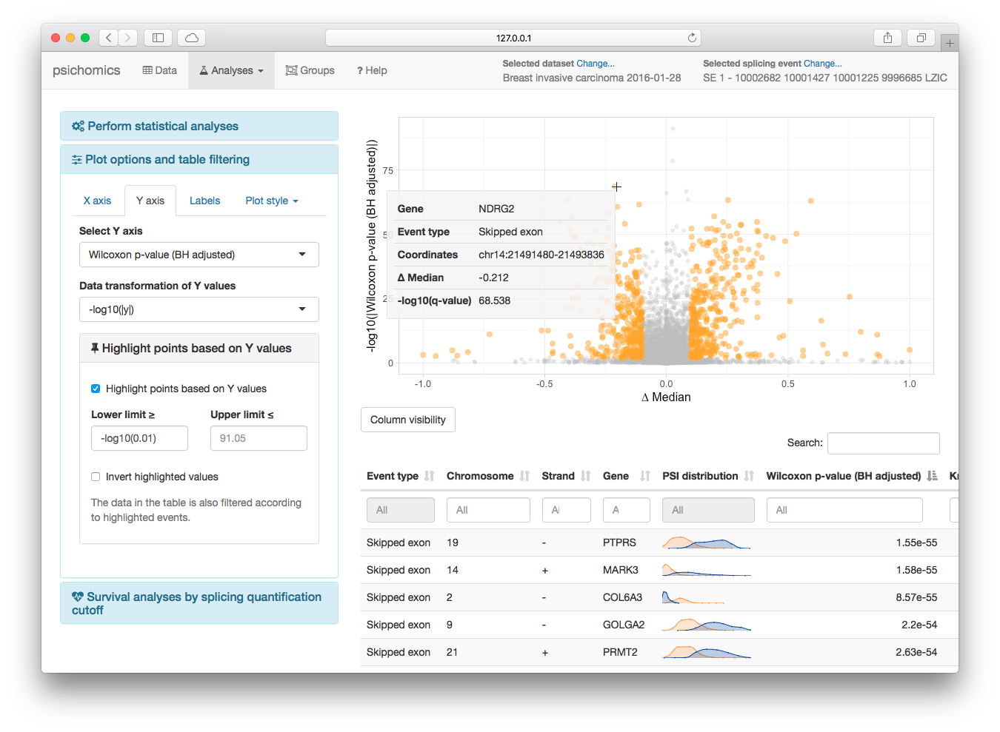

Original article:
Nuno Saraiva-Agostinho and Nuno L. Barbosa-Morais (2019). psichomics: graphical application for alternative splicing quantification and analysis. Nucleic Acids Research. 47(2), e7.
Interactive R package with an intuitive Shiny-based graphical interface for alternative splicing quantification and integrative analyses of alternative splicing and gene expression based on The Cancer Genome Atlas (TCGA), the Genotype-Tissue Expression (GTEx) project, Sequence Read Archive (SRA) and user-provided data.
psichomics interactively performs: - Dimensionality reduction - Median- and variance-based differential splicing and gene expression analyses - Survival analysis - Correlation analysis - Grouping by clinical and molecular features (such as tumour stage or survival) - Genomic mapping and functional annotation of alternative splicing events and genes

Install and start running
Bioconductor
To install the package from Bioconductor, type the following in RStudio or in an R console:
install.packages("BiocManager")
BiocManager::install("psichomics")
library("psichomics")- RStudio is now accessible via the web browser at https://localhost:8787
- Enter RStudio with user
rstudioand passwordbioc - Load psichomics using
library(psichomics) - Start the visual interface of psichomics with
psichomics()
Start the visual interface of psichomics with psichomics()
GitHub
Install from GitHub (specify a branch or tag via the ref argument):
install.packages("remotes")
remotes::install_github("nuno-agostinho/psichomics", ref="master")
library("psichomics")Start the visual interface of psichomics with psichomics()
Docker
The Docker images are based on Bioconductor Docker and contain psichomics and its dependencies.
- Pull the latest Docker image:
docker pull ghcr.io/nuno-agostinho/psichomics:latest- Start RStudio Web from the Docker image:
docker run -e PASSWORD=bioc -p 8787:8787 ghcr.io/nuno-agostinho/psichomics:latest- Go to RStudio Web via the web browser at https://localhost:8787
- Log in RStudio with user
rstudioand passwordbioc - Load psichomics using
library(psichomics) - Start the visual interface of psichomics with
psichomics()
Tutorials
The following case studies and tutorials are available and were based on our original article:
- Visual interface
- Command-line interface
- Loading user-provided data
- Preparing alternative splicing annotations
Another tutorial was published as part of the Methods in Molecular Biology book series (the code for performing the analysis can be found here):
Nuno Saraiva-Agostinho and Nuno L. Barbosa-Morais (2020). Interactive Alternative Splicing Analysis of Human Stem Cells Using psichomics. In: Kidder B. (eds) Stem Cell Transcriptional Networks. Methods in Molecular Biology, vol 2117. Humana, New York, NY
Workflow
Data input
Automatic retrieval and loading of pre-processed data from the following sources:
- TCGA data of given tumours, including subject- and sample-associated information, junction quantification and gene expression data
- GTEx data of given tissues, including subject- and sample-associated information, junction quantification and gene expression data
- SRA data from select SRA projects via the recount package
Other SRA, VAST-TOOLS and user-provided data can also be manually loaded. Please read Loading user-provided data for more information.
Alternative splicing quantification
The quantification of each alternative splicing event is based on the proportion of junction reads that support the inclusion isoform, known as percent spliced-in or PSI (Wang et al., 2008).
An estimate of this value is obtained based on the the proportion of reads supporting the inclusion of an exon over the reads supporting both the inclusion and exclusion of that exon. To measure this estimate, we require:
Data grouping
Molecular and clinical sample-associated attributes allow to establish groups that can be explored in data analyses.
For instance, TCGA data can be analysed based on smoking history, gender and race, among other attributes. Groups can also be manipulated (e.g. merged, intersected, etc.), allowing for complex attribute combinations. Groups can also be saved and loaded between different sessions.
Data Analyses
Dimensionality reduction via principal and independent component analysis (PCA and ICA) on alternative splicing quantification and gene expression.
Differential splicing and gene expression analysis based on variance and median parametric and non-parametric statistical tests.
Correlation between gene expression and splicing quantification, useful to correlate the expression of a given event with the expression of RNA-binding proteins, for instance.
Survival analysis via Kaplan-Meier curves and Cox models based on sample-associated features. Additionally, we can study the impact of a splicing event (based on its quantification) or a gene (based on its expression) on patient survivability.
Gene, transcript and protein annotation, including relevant research articles.
Feedback and support
Please send any feedback and questions on psichomics to:
Nuno Saraiva-Agostinho (nunodanielagostinho@gmail.com)
Disease Transcriptomics Lab, Instituto de Medicina Molecular (Portugal)
References
Wang, E. T., R. Sandberg, S. Luo, I. Khrebtukova, L. Zhang, C. Mayr, S. F. Kingsmore, G. P. Schroth, and C. B. Burge. 2008. Alternative isoform regulation in human tissue transcriptomes. Nature 456 (7221): 470–76.